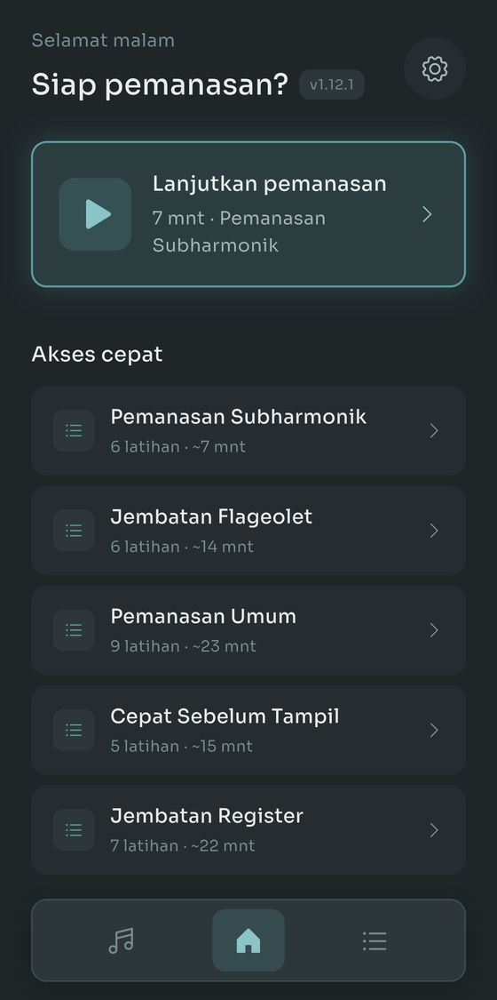
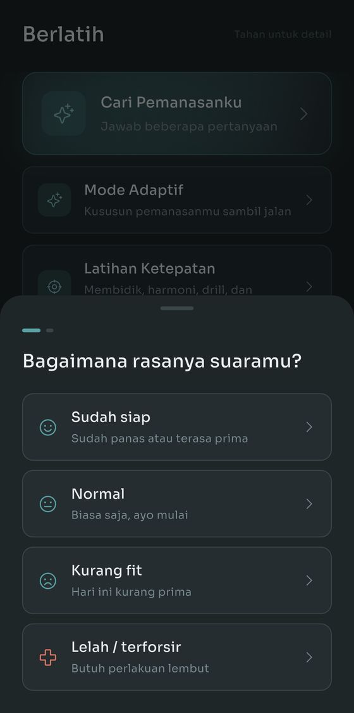
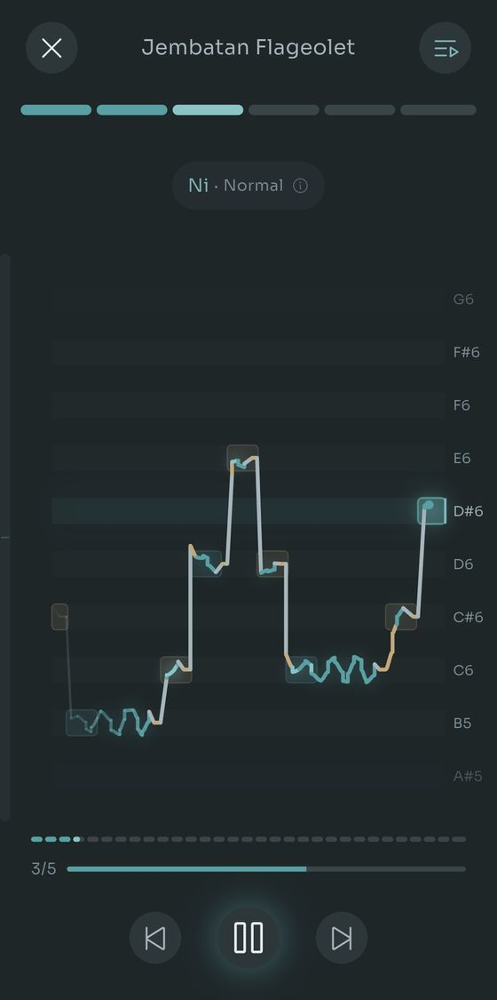
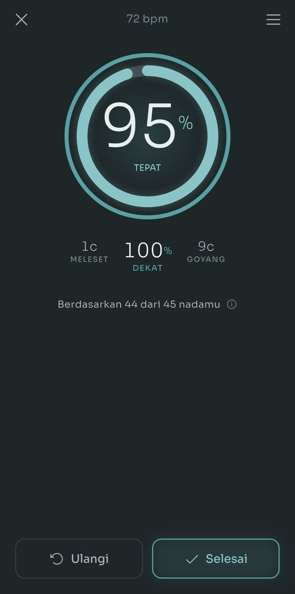
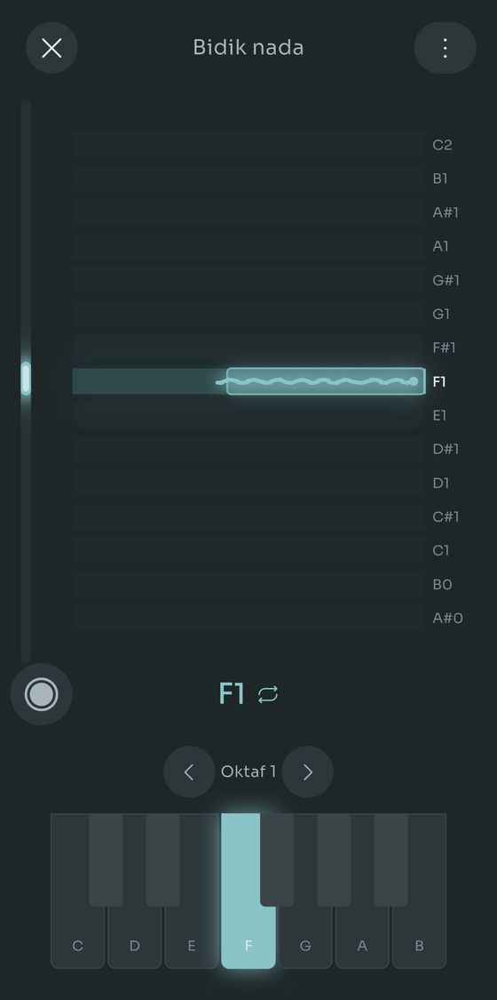
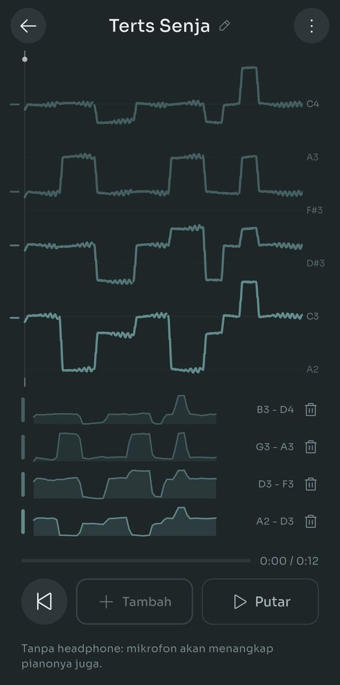
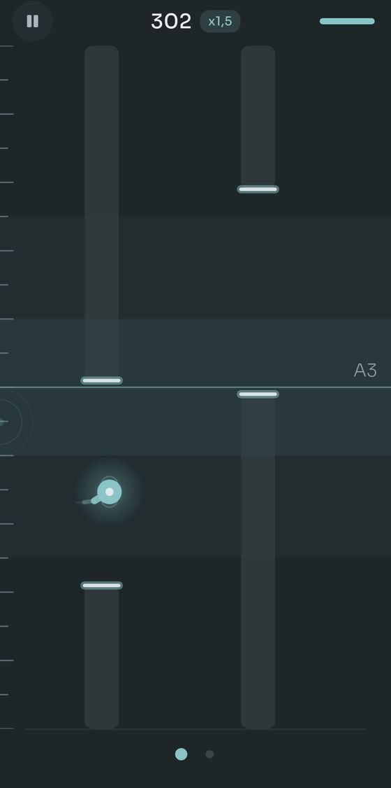
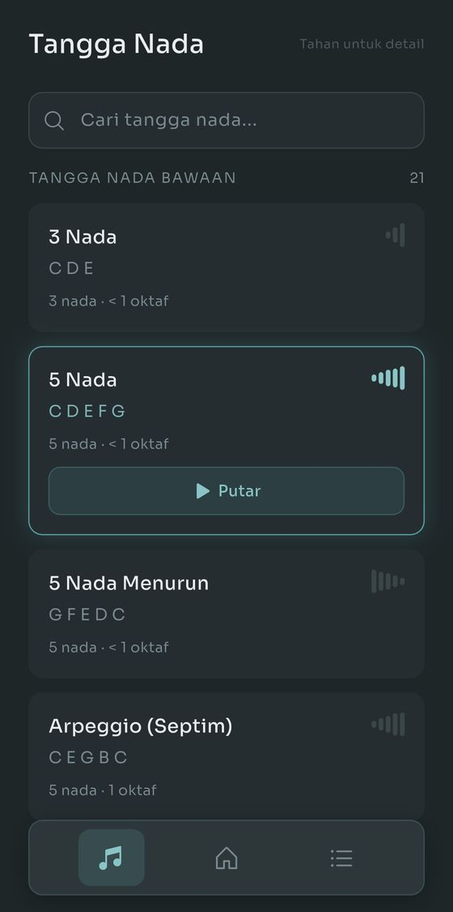
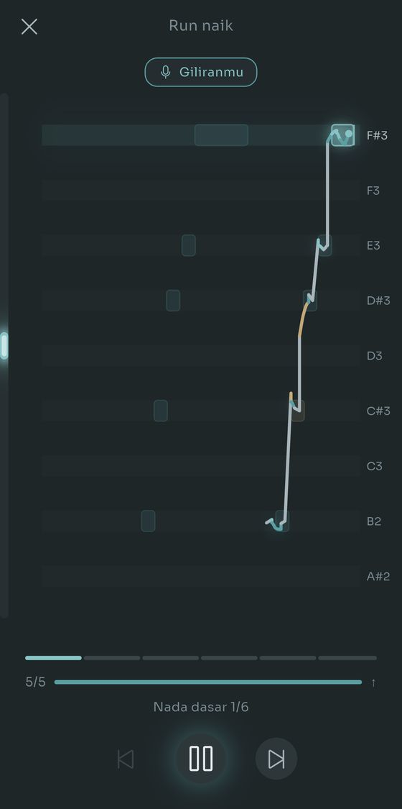

Scalita memainkan tangga nada dengan Salamander Grand Piano sementara kamu ikut bernyanyi. Atur jangkauan vokalmu sekali, dan nada dasar setiap latihan disesuaikan supaya pas.
Tangga nada sederhana. Piano asli. Tanpa basa-basi.








Tidak ada yang perlu dibaca dulu, tidak perlu mendaftar.
Bernyanyilah ke ponsel dan Scalita menemukan nada terendah dan tertinggimu. Atau pilih jenis suara dan lewati langkah ini.
Sudah tersedia 21 tangga nada dan 15 rutinitas. Bingung pilih yang mana? Jawab dua pertanyaan dan Cari Pemanasanku memilihkan untukmu.
Piano memainkan polanya, naik setengah nada, lalu memainkannya lagi, semuanya di dalam jangkauan yang kamu atur.
Sampel Salamander Grand Piano asli di seluruh 88 tuts, dari A0 sampai C8. Serendah atau setinggi apa pun kamu bernyanyi, ada nada rekaman untuknya.
Empat cara agar nadamu tepat. Semuanya melatih telinga dan suaramu sekaligus: dengar di mana nadanya, lalu bawa suaramu tepat ke sana.
Juga baru: dengan earphone kabel, setiap tangga nada dan rutinitas berakhir dengan skor. Seberapa banyak yang tepat, seberapa dekat sisanya, dan satu hal untuk dilatih. Semuanya gratis. Pro hanya menambahkan perekam latihan di Bidik nada dan tempat untuk lebih dari satu harmoni tersimpan.

Sisa aplikasinya, dalam empat bagian. Tidak ada yang menghalangimu di hari pertama.
Cari Pemanasanku menanyakan kondisi suaramu hari ini dan apa yang ingin kamu latih, lalu memilihkan rutinitas dan mengatur temponya. Mode Adaptif malah tidak memakai rencana sama sekali: setelah setiap latihan, kamu bilang bagaimana hasilnya, dan apa yang terasa berat kalau ada, lalu latihan berikutnya menyesuaikan. Bilang kamu punya sepuluh menit, dan Scalita mengatur seluruh sesi supaya muat, termasuk pendinginan.
Pakai earphone dan jejak langsung menunjukkan posisi suaramu di setiap nada, hijau saat tepat dan jingga saat meleset. Dengan earphone kabel, setiap tangga nada dan rutinitas juga berakhir dengan skor: seberapa banyak yang tepat, seberapa dekat sisanya, dan satu hal untuk dilatih. Bidik nada mempersempitnya ke satu tuts setiap kali dan menyimpan rekamanmu: audionya, garis nadanya, dan apa yang sedang dimainkan keyboard, jadi minggu depan kamu bisa membuka salah satunya dan mendengar apakah ada yang berubah.
Kebanyakan aplikasi pemanasan berhenti di suara dada dan suara kepala. Atur rentang untuk setiap register yang benar-benar kamu pakai, dan tiga rutinitas khusus terbuka: gemeretak di bawah suara dadamu, nada seperti seruling di atas jangkauanmu, dan whistle yang lebih tinggi lagi. Tandai juga peralihan registermu, dan latihannya disusun di sekitarnya.
Susun tangga nada dan rutinitas dari nol: interval, suku kata, tempo, nada awal. Atau nyanyikan atau mainkan sebuah pola ke Rekam Tangga Nada, dan nadanya dituliskan untukmu. Sejak dibangun ulang, fitur ini hanya butuh sekitar separuh koreksi pada nyanyian sungguhan, dan menandai nada yang hasilnya untung-untungan supaya kamu tahu bagian mana yang perlu diperiksa.
Semua fitur bisa dipakai gratis. Pro menghapus batas berapa banyak yang bisa kamu simpan.
Sekali bayar, tanpa langganan. Harga di tiap negara ditentukan oleh Google Play.
Gratis di Google Play. Tanpa akun, tanpa iklan, tidak ada yang perlu dibatalkan.
Untuk sekarang hanya Android. Tersedia dalam bahasa Indonesia, Inggris, Spanyol, Prancis, Portugis, Jerman, dan Turki.